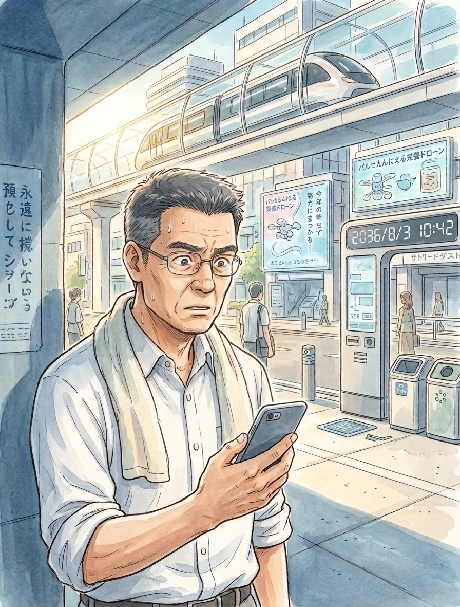

2036年、夏。
その日も、東京は朝から暑かった。
午前十時を過ぎるころには、道路の向こう側が陽炎で揺れていた。
駅前のコンビニには、昼休みにはまだ少し早い時間だというのに、仕事途中の客が何人か入っていた。
その男も、その一人だった。
五十代くらいに見える。
白いシャツの袖をまくり、首には薄いタオルをかけている。
冷蔵ケースの前で少し迷ったあと、ペットボトルの水を一本取った。
レジ前を通り、自動精算の支払いを済ませる。
そして、いつものように出口へ向かった。
この店には、顔認証による自動ゲートが設置されていた。
支払いを済ませた客は、顔を認証されると、そのままゲートを通ることができる。
男がゲートの前に立った。
小さな音がして、認証処理が始まる。
男は何気なく前を向いた。
ところが、ゲートは開かなかった。
「ん？」
もう一度、前に立つ。
画面に文字が表示された。
残高不足
男は眉をひそめた。
「……残高不足？」
水一本の残高がない。
そんなはずはない。
男はポケットからスマートフォンを取り出した。
銀行のアプリを開く。
画面に表示された数字を見て、男はしばらく動かなかった。
預金残高。
ゼロ。
「え……」
数字を見間違えたのかと思い、画面を閉じて、もう一度開く。
同じだった。
ゼロ。
男はペットボトルを返し、外へ出た。
男は日陰に入ってから、銀行アプリを開いた。
取引明細を確認する。
本日の振込によって、残高がゼロになっていた。
「……なんだ、これ」

まったく身に覚えがない。
額を確認した瞬間、汗が噴き出した。
男は銀行アプリのチャットボットを開いた。
いくつか質問に答えると、有人オペレーターへの問い合わせを案内された。
男はそのまま電話をかけた。
ようやく自動音声につながり、本人確認を終える。
しばらくして、オペレーターの声がした。
「本日、お客様のインターネットバンキングから振込のお取引がございます」
「そんなの、してませんよ！」
男の声が大きくなった。
「今日はインターネットバンキングなんて使ってないのに、どうして振込されているんですか！」
オペレーターは、すぐには答えなかった。
「振込なんかしていないんです。誰かに不正利用されている可能性がある。至急調べてください！」
「不正送金の可能性として、調査を承ります」
オペレーターの声は落ち着いていた。
「振込先の連絡先を教えてくれ！」
男は叫ぶように言った。
「申し訳ありません。振込先については、個人情報保護のためお伝えできません」
男は黙った。
結局、穂積銀行に調査を任せるしかなかった。
口座の一時凍結と、警察への届け出について説明を受けたあと、男は電話を切った。
スマートフォンを握ったまま、しばらく動けなかった。
汗が噴き出してくる。
喉が渇いた。
さっき買おうとした水が、今はひどく遠いものに思えた。
しかし、その水さえ、もう買えない。
男は空を見上げた。
八月の太陽が、容赦なく照りつけていた。